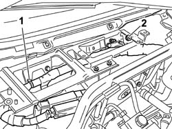
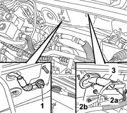
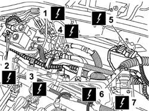
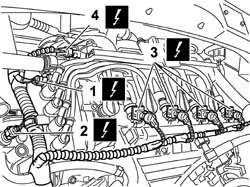
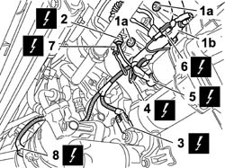
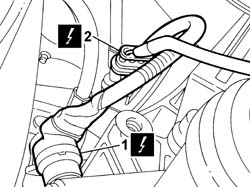
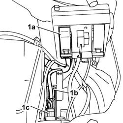

1058A90 cng injection wiring harness - arrange
- Path
- Procedures > 10 ENGINE > 1058 CNG FUEL SYSTEM > 1058A gas circuit multi point injection > 1058A90 cng injection wiring harness - arrange
- Kind
- repair procedure (removal / refitting; the operation number is the code)
- Applies to
- all engines; all production periods; only with equipment: BIPOWER
- Interactive page
- https://sloeber94.github.io/elrnDB-fDbl/en/#/2584554
Applies to: all engines; all production periods; only with equipment: BIPOWER
 Removing
Removing
 Refitting
RefittingPlace the car on a lift.
Disconnect the battery negative terminal.
5050B34 windscreen wiper arm/s complete with blade - r+r
7055A18 Windscreen base TRIM - R.R.
1058A80 cng injection unit control unit - r r
1056B82 injection/ignition system e.c.u. (one) - r + r
1. Release the wiring harness from the retaining bands located below the control units mounting bracket.
2. Undo the nut securing the CNG control unit earth lead.
 | Name | Connector |
|---|---|---|
2 | Methane injection control unit earth | C62 |

Applies to: all engines; all production periods; only with equipment: BIPOWER
1. Undo the nut securing the earth lead on the engine compartment bulkhead.
2. Undo the nuts (2a) and withdraw the cable pass buffer (2b).
3. Pass the wiring harness in the engine compartment through the hole in the engine compartment bulkhead.

Applies to: all engines; all production periods; only with equipment: BIPOWER
1048A32 sleeve from air cleaner to intake manifold - r + r
1. Disconnect the electrical connection for the methane pressure sensor.
| Name | Connector |
|---|---|---|
1 | Methane pressure sensor | K54 |
2. Disconnect the electrical connections of the methane adjustment solenoid.
| Name | Connector |
|---|---|---|
2 | Methane regulation solenoid | L61A |
| Name | Connector |
|---|---|---|
2 | Methane regulation solenoid | L61B |
3. Disconnect the electrical connection from the intake air temperature sensor.
| Name | Connector |
|---|---|---|
3 | Integrated air temperature sensor | K43 |
4. Disconnect the electrical connection from the fuel vapour recovery solenoid.
| Name | Connector |
|---|---|---|
4 | Fuel vapour recovery solenoid | L10 |
5. Disconnect the electrical connection for the upstream Lambda sensor on the catalyzer.
| Name | Connector |
|---|---|---|
5 | Lambda sensor on pre-catalyzer | K15 |
6. Disconnect the electrical connection from the butterfly position sensor.
| Name | Connector |
|---|---|---|
6 | Throttle position sensor | K56 |
7. Disconnect the electrical connection from the idle actuator.
| Name | Connector |
|---|---|---|
7 | Idle actuator | N74 |

Applies to: all engines; all production periods; only with equipment: BIPOWER
1. Disconnect the electrical connections for the ignition coil.
| Name | Connector |
|---|---|---|
1 | Ignition 'coil | A30 |
2. Disconnect the electrical connection from the engine coolant temperature sensor.
| Name | Connector |
|---|---|---|
2 | Coolant temperature sender unit | K45 |
3. Disconnect the electrical connections for the methane injectors.
| Name | Connector |
|---|---|---|
3 | Methane injector | N72 |
4. Disconnect the petrol injectors electrical connection.
| Name | Connector |
|---|---|---|
4 | Injector junction | D81 |
Release the wiring from the retaining bands.

Applies to: all engines; all production periods; only with equipment: BIPOWER
7055B54 under-engine guard - r r .
1. Undo the nuts (1a) and release the wiring harness protection (1b).
2. Disconnect the electrical connection for the rpm sensor.
| Name | Connector |
|---|---|---|
2 | RPM sensor | K46 |
3. Disconnect the electrical connection for the detonation sensor.
| Name | Connector |
|---|---|---|
3 | Detonation sensor | K50 |
4. Disconnect the electrical connector for the oil pressure sensor.
| Name | Connector |
|---|---|---|
4 | Insufficient engine oil pressure (switch) sensor | K30 |
5. Disconnect the electrical connection for the starter motor.
| Name | Connector |
|---|---|---|
5 | Starter' motor | A20 |
6. Disconnect the electrical connection for the alternator.
| Name | Connector |
|---|---|---|
6 | Alternator | A10 |
7. Disconnect the electrical connection for the timing sensor.
| Name | Connector |
|---|---|---|
7 | Timing sensor | K47 |
8. Disconnect the electrical connection on the air conditioning compressor.
| Name | Connector |
|---|---|---|
8 | Air conditioning compressor "on" electromagnet | L20 |

Applies to: all engines; all production periods; only with equipment: BIPOWER
1. Disconnect the electrical connection for the speedometer sensor.
| Name | Connector |
|---|---|---|
1 | Speedometer sensor | K84 |
2. Disconnect the electrical connection for the downstream Lambda sensor.
| Name | Connector |
|---|---|---|
2 | Lambda sensor on catalyzer | K17 |
Open the wiring retaining band.

Applies to: all engines; all production periods; only with equipment: BIPOWER
Lower the vehicle on the lift.
Remove the engine bay junction unit cover, then release the control unit from the clips securing it to the mount.
1. Disconnect the engine bay junction unit electrical connection (1a), disconnect facia wiring harness connectors (1b) and (1c).
| Name | Connector |
|---|---|---|
1a | Engine compartment junction unit | B1 |
| Name | Connector |
|---|---|---|
1b | Junction unit under dashboard | B2 |
| Name | Connector |
|---|---|---|
1c | Front/engine coupling | D4 |
Fold the cable loom onto the power unit.
Release the wiring from the retaining clips in the battery cradle area, then remove it from the engine compartment.

Applies to: all engines; all production periods; only with equipment: BIPOWER
Refitting
RemovingPosition the wiring harness in the engine compartment.
Close the wiring retaining bands on the battery cradle.
Connect the dashboard cable loom connectors.
| Name | Connector |
|---|---|---|
- | Front/engine coupling | D4 |
| Name | Connector |
|---|---|---|
- | Junction unit under dashboard | B2 |
Connect the electrical connection to the engine bay control unit coupling.
| Name | Connector |
|---|---|---|
- | Engine compartment junction unit | B1 |
Fit the junction unit in its original position and do up the clips securing it to the protective cover.
Refit the cover for the junction unit in the engine compartment.
Raise the vehicle on a lift.
Connect the electrical connection for the rear Lambda sensor.
| Name | Connector |
|---|---|---|
- | Lambda sensor on catalyzer | K17 |
Close the wiring retaining band.
Connect the electrical connection of the speedometer sensor.
| Name | Connector |
|---|---|---|
- | Speedometer sensor | K84 |
Connect the electrical connection to the air conditioner compressor.
| Name | Connector |
|---|---|---|
- | Air conditioning compressor "on" electromagnet | L20 |
Connect the timing sensor electrical connection.
| Name | Connector |
|---|---|---|
- | Timing sensor | K47 |
Connect the electrical connection to the alternator.
| Name | Connector |
|---|---|---|
- | Alternator | A10 |
Connect the electrical connection to the starter motor.
| Name | Connector |
|---|---|---|
- | Starter' motor | A20 |
Connect the electrical connection for the oil pressure sensor.
| Name | Connector |
|---|---|---|
- | Insufficient engine oil pressure (switch) sensor | K30 |
Connect the electrical connection for the detonation sensor.
| Name | Connector |
|---|---|---|
- | Detonation sensor | K50 |
Connect the electrical connection for the rpm sensor.
| Name | Connector |
|---|---|---|
- | RPM sensor | K46 |
Tighten the wiring loom protection retaining nuts.
7055B54 under-engine guard - r r .
Lower the car from the ramp.
Connect the petrol injectors electrical connection.
| Name | Connector |
|---|---|---|
- | Injector junction | D81 |
Connect the methane injectors electrical connections.
| Name | Connector |
|---|---|---|
- | Methane injector | N72 |
Connect the electrical connection for the engine coolant temperature sensor.
| Name | Connector |
|---|---|---|
- | Coolant temperature sender unit | K45 |
Connect the electrical connection for the ignition coil.
| Name | Connector |
|---|---|---|
- | Ignition 'coil | A30 |
Secure the wiring using the retaining bands.
Connect the electrical connection for the idle actuator.
| Name | Connector |
|---|---|---|
- | Idle actuator | N74 |
Connect the electrical connection for the butterfly position sensor.
| Name | Connector |
|---|---|---|
- | Throttle position sensor | K56 |
Connect the electrical connection for the upstream Lambda sensor on the catalyzer.
| Name | Connector |
|---|---|---|
- | Lambda sensor on pre-catalyzer | K15 |
Connect the electrical connection for the fuel vapour recovery solenoid.
| Name | Connector |
|---|---|---|
- | Fuel vapour recovery solenoid | L10 |
Connect the electrical connection for the intake air temperature sensor.
| Name | Connector |
|---|---|---|
- | Integrated air temperature sensor | K43 |
Connect the electrical connections for the methane adjustment solenoid.
| Name | Connector |
|---|---|---|
- | Methane regulation solenoid | L61A |
| Name | Connector |
|---|---|---|
- | Methane regulation solenoid | L61B |
Connect the methane pressure sensor electrical connection.
| Name | Connector |
|---|---|---|
- | Methane pressure sensor | K54 |
1048A32 sleeve from air cleaner to intake manifold - r + r .
Pass the wiring through the cable pass buffer and then through the hole in the engine compartment bulkhead.
Tighten the nuts securing the cable pass buffer to the engine compartment bulkhead.
Secure the earth lead to the engine compartment bulkhead using the nut.
Position the wiring under the control units mounting bracket and secure it by means of the retaining bands.
Secure the CNG control unit earth lead.
| Name | Connector |
|---|---|---|
- | Methane injection control unit earth | C62 |
1056B82 injection/ignition system e.c.u. (one) - r + r
1058A80 cng injection unit control unit - r r
7055A18 Windscreen base TRIM - R.R.
5050B34 windscreen wiper arm/s complete with blade - r+r
Connect the battery negative terminal.
Remove the car from the ramp.